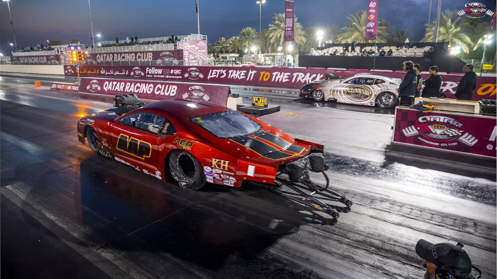

Drag Racing
Cel mai rapid sport cu motor din lume
Introducere
Drag racing este o disciplină a motorsportului în care două vehicule se întrec pe o distanță liniară fixă, parcurgând fie un sfert de milă (402 metri), fie o optime de milă (201 metri). Câștigătorul este pilotul care traversează primul linia de sosire. Competițiile se desfășoară pe piste dedicate numite dragstrip-uri, dotate cu sisteme electronice de cronometrare de înaltă precizie.
Performanțele atinse în această disciplină sunt remarcabile: un Top Fuel Dragster poate depăși 530 km/h în mai puțin de patru secunde de la start, generând o forță de accelerație de 4–5 G — comparabilă cu cea resimțită de piloții de avioane militare în timpul manevrelor de luptă.
Scurt Istoric
Originile drag racing-ului se regăsesc în sudul Californiei, la sfârșitul anilor 1940, când entuziaștii auto se organizau în curse neoficiale pe drumurile deșertice. Recunoscând potențialul sportiv al acestui fenomen, autoritățile locale au facilitat tranziția spre competiții organizate: în 1950, aerodromul dezafectat Santa Ana a găzduit primul eveniment oficial din istoria disciplinei.
În 1951, Wally Parks a fondat NHRA (National Hot Rod Association), organismul care a standardizat regulamentul și a pus bazele unui sport sigur și structurat. Fenomenul a traversat Atlanticul în anii 1960, iar astăzi FIA — Federația Internațională a Automobilului — coordonează campionatele europene, asigurând uniformitatea regulilor la nivel mondial.
România a intrat în circuitul competițional european prin intermediul RoDrag, asociație înființată în 2006, care organizează etape ale Campionatului Național și atrage participanți din întreaga regiune.
Primul record omologat oficial pe sfert de milă datează din 1955 și a fost stabilit la 10.25 secunde — o performanță considerată de neatins la acea epocă, astăzi depășită cu mult de clasele moderne.